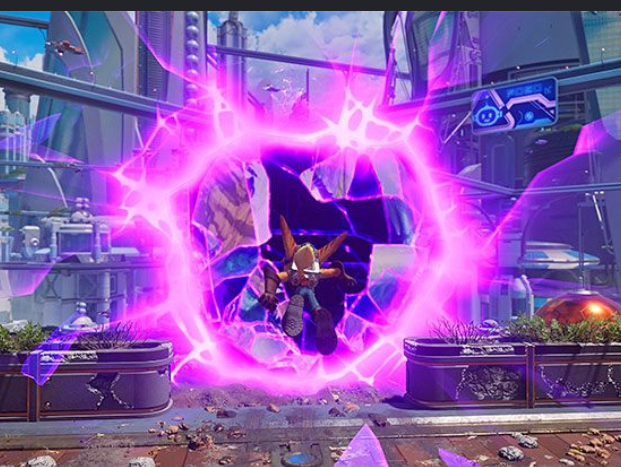

Dimension Rift hover effect
Current Ratchet & Clank Wiki preview effect. Hover or keyboard-focus an icon to open the rift and reveal the gold-orange glow.
Improve the torn-glass geometry against the reference below. See README.md and AGENTS.md for the handoff.
Rift Apart reference
